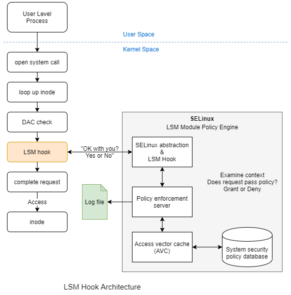

Android SELinux介绍
前言¶
自Android L开始，Android全面启用了SELinux。本文旨在介绍SELinux背后的一些细节，Android的实现，此外还有创建，拓展，删除规则的不同选项。 本文会从语法、Android SE流程等详细介绍SELinux相关知识。如果读者不感兴趣，只想快速的解决某个进程缺少SELinux导致的错误，可以直接跳到“万能公式”这一节。
简介¶
SElinux是linux操作系统的一个MAC（mandatory access control）子系统。MAC不同于树枝的DAC（ discretionary access control）系统，它通过授权中心来决定是否有资格访问目标资源。 SElinux已经在LSM（Linux Security Module）框架中实现，它会识别各种内核组件，以及对这些组件的敏感操作。当执行一个操作时，会通过调用一个hook函数来确定当前操作是否被合法。hook函数由SELinux实现，SELinux基于自己的规则数据来确定当前操作的合法性。具体流程如下图所示：

工作模式¶
- permissive：所有访问资源的操作都被允许（即没有MAC），但是如果有违反权限的话，会记录日志。
- enforcing：所有访问资源的操作都会对其进行权限检查。
工作原理¶
SELinux 的工作理念是用标签**（labels）来匹配各种操作和各种规则。SELinuxz中，Socket，文件以及进程都会被打上标签，然后基于用户对各种标签定义的访问规则来做出判断。 SELinux中，标签的格式为：**user:role:type:mls_level。其中，type段最为常用。 SELinux中，规则**（rules）的格式为：**allow domains types:classes permissions;。其中：
- Domain：一个或一组进程的标签，理解为进程标签中的 type 部分。
- Type：一个或一组对象的标签，理解为非进程对象标签中的 type 部分。
- Class：表示对象的类型，理解：多个对象可以打上相同的标签，意味着文件，文件夹，sokcet等不同类型的文件都可能打上相同标签，所以需要class来区分不同类型。
- Permission：表示进程对对象执行的动作，比如 read，write等。
示例：allow appdomain app_data_file:file rw_file_perms;
Android实现¶
Android的安全模型是建立在应用沙盒的概念上的，Android4.3之前，Android通过给不同应用分配不同uid来建立沙盒环境，4.3之后，Android引入了SELinux机制，为沙盒增加了新的边界。SEAndroid采用默认拒绝的策略，即默认情况下，系统进程无法访问任何对象，所有的访问需要被明确定义，以此增强Android的安全性。这意味着一个策略文件会包含大量的信息，包括规则（rules），类型（types），类别（classes），权限（permissions）等。
差异¶
与标准SELinux的差异主要是：Android针对其平台特性，增加了BInder IPC机制的相关SE策略，以此来控制Binder通信策略。相关patch如下：
Android简化SE标签的使用，实际上，Android只用了其中两个部分：role 和 type，另外两个部分依然存在，不过被写死成 u:role:type:s0。role部分有两个取值分别为：
- r ：domains (processes)
- object_r ：对象 objects.
SE相关文件¶
- ***.te**：SE规则定义文件。该文件中定义域（domain）及其标签（label）。新增的
te文件会与系统所有的te文件整合成一个单独的 SE 内核规则文件。 - BoardConfig.mk：引入额外存放SE规则定义目录的mk文件。SE规则文件可以存放到任意目录下，但需要在
[BoardConfig.mk](http://boardconfig.mk/)中引入对应目录方可生效。 - file_contexts：系统中各文件贴标签处。用于为文件分配标签，被各种用户空间的组件使用。当创建新的
te文件来定义新类型时，需要修改（或新建）file_contexts文件使新建的类型得以生效。修改file_contexts后需要重编ROM使之生效。 - genfs_contexts： 系统中各种特殊文件（例如，
proc或vfat）贴标签处。该配置会作为内核SE规则的一部分进行加载。 - property_contexts： Android 系统属性贴标签处。以此控制进程对属性的访问。在启动期间，
init进程会读取此配置。 - service_contexts： Android Binder 服务贴标签处。以此控制进程添加（register）和查找（lookup）Binder 引用。在启动期间，
servicemanager进程会读取此配置。 - seapp_contexts： 应用进程和
/data/data目录贴标签处。在每次应用启动时，zygote进程据此确定应用的SE标签；installd据此确定/data/data的SE标签。 - mac_permissions.xml：根据应用签名和应用软件包名称（optionally）为应用分配
seinfo标记。seapp_contexts文件会根据seinfo标记为应用分配特定标签。在启动期间，system_server会读取此配置。
语法¶
SE相关的语法大致可以分为如下几类：
- Policy Configuration Statements
- Default Rules
- User Statements
- Role Statements
- Type Statements
- Bounds Rules
- Access Vector Rules
- Extended Permission Access Vector Rules
- Object Class and Permission Statements
- Conditional Policy Statements
- Constraint Statements
- MLS Statements
- Security ID (SID) Statement
- File System Labeling Statements
- Network Labeling Statements
- Modular Policy Support Statements
- XEN Statements
本文只列出几个常用的语法，其他语法自查上述连接。
Type Statements¶
type¶
在使用类型前，必须使用type语句明确地声明一个类型标识符，SELinux没有预定义类型，我们必须自行声明，声明了类型后就可以在安全上下文、TE规则和其它策略语句中使用它们了。
## type 类型名称 [alias 别名集] [,属性集];
## 别名集：即异名同意。如果指定的不止一个别名标识符，要在一对大括号中用空格将各个别名区别开来，如：alias {aliasa_t aliasb_t}。
## 属性集：赋予该type定义的属性之中。是一个或多个预先声明的属性标识符，如果同时指定多个属性标识符，属性之间使用逗号进行分隔，如：type bin_t, file_type, exec_type;
type type_id [alias alias_id] [, attribute_id];
## type The type keyword.
## type_id The type identifier.
## alias Optional alias keyword that signifies alternate identifiers for the type_id that are declared in the alias_id list.
## alias_id One or more alias identifiers that have been previously declared by the [typealias](https://selinuxproject.org/page/TypeStatements#typealias) statement.
## Multiple entries consist of a space separated list enclosed in braces ({}).
## attribute_id One or more optional attribute identifiers that have been previously declared by the [attribute](https://selinuxproject.org/page/TypeStatements#attribute)
## statement. Multiple entries consist of a comma (,) separated list, also note the lead comma.
例子:
## Using the type statement to declare a type of shell_exec_t,
## where exec_t is used to identify a file as an executable type.
type shell_exec_t;
## Using the type statement to declare a type of
## ssh_server_packet_t that also associates it to two previously
## declared attributes packet_type and server_packet_type.
attribute packet_type; ## declare attribute 1
attribute server_packet_type; ## declare attribute 2
## Associate the type identifier with the two attributes:
type ssh_server_packet_t, packet_type, server_packet_type;
attribute¶
由于SELinux的默认的规则是拒绝所有的访问，所以任何一个访问都需要有一个规则定义与之匹配。Android中的type好几百，逐个定义耗时巨大，所以引入属性，可以将一个属性赋予多个type，以此达到批量定义规则的目的。
## attribute 属性名称;
attribute attribute_id;
## attribute The attribute keyword.
## attribute_id The attribute identifier.
例子:
## Using the attribute statement to declare attributes domain,
## daemon, file_type and non_security_file_type:
attribute domain;
attribute daemon;
attribute file_type;
attribute non_security_file_type;
Access Vector Rules¶
The common format of the Access Vector Rule is:
rule_name source_type target_type : class perm_set;
## rule_name The applicable allow, dontaudit, auditallow, and neverallow rule keyword.
#
## source_type/target_type One or more source / target type, typealias or attribute identifiers. Multiple entries consist of
## a space separated list enclosed in braces ({}). Entries can be excluded from the list by using the
## negative operator (-).The target_type can have the self keyword instead of type, typealias or attribute
## identifiers. This means that the target_type is the same as the source_type.The neverallow rule also
## supports the wildcard operator (*) to specify that all types are to be included and the complement operator (~)
## to specify all types are to be included except those explicitly listed.
#
## class One or more object classes. Multiple entries consist of a space separated list enclosed in braces ({}).
#
## perm_set The access permissions the source is allowed to access for the target object (also known as the Acess Vector).
## Multiple entries consist of a space separated list enclosed in braces ({}).The optional wildcard operator (*)
## specifies that all permissions for the object class can be used.The complement operator (~) is used to specify
## all permissions except those explicitly listed (although the compiler issues a warning if the dontaudit rule has '~').
allow¶
allow规则检查定义进程是否有权访问某个系统资源。
## Using the allow rule to show that initrc_t is allowed access
## to files of type acct_exec_t that have the getattr, read and
## execute file permissions:
allow initrc_t acct_exec_t:file { getattr read execute };
neverallow¶
该规则指定即使该操作先前已被允许，也不能为该操作生成允许规则。 neverallow语句是编译器强制执行的操作，其中checkpolicy或checkmodule [1]编译器检查策略源中是否已生成任何允许规则，如果是，它将发出警告并停止。
## Using the neverallow rule to state that no allow rule may ever
## grant any file read access to type shadow_t except those
## associated with the can_read_shadow_passwords attribute:
neverallow ~can_read_shadow_passwords shadow_t:file read;
Android SE流程¶
SE加载流程¶
first_stage_main.main()¶
http://aospxref.com/android-12.0.0_r3/xref/system/core/init/first_stage_main.cpp
#include "first_stage_init.h"
int main(int argc, char** argv) {
return android::init::FirstStageMain(argc, argv);
}
first_stage_init.FirstStageMain()¶
http://aospxref.com/android-12.0.0_r3/xref/system/core/init/first_stage_init.cpp
int FirstStageMain(int argc, char** argv) {
...
const char* path = "/system/bin/init";
const char* args[] = {path, "selinux_setup", nullptr};
...
execv(path, const_cast<char**>(args));
...
}
main.main()¶
http://aospxref.com/android-12.0.0_r3/xref/system/core/init/main.cpp
int main(int argc, char** argv) {
...
if (argc > 1) {
...
if (!strcmp(argv[1], "selinux_setup")) {
return SetupSelinux(argv);
}
...
}
...
}
selinux.SetupSelinux()¶
http://aospxref.com/android-12.0.0_r3/xref/system/core/init/selinux.cpp
// The SELinux setup process is carefully orchestrated around snapuserd. Policy
// must be loaded off dynamic partitions, and during an OTA, those partitions
// cannot be read without snapuserd. But, with kernel-privileged snapuserd
// running, loading the policy will immediately trigger audits.
//
// We use a five-step process to address this:
// (1) Read the policy into a string, with snapuserd running.
// (2) Rewrite the snapshot device-mapper tables, to generate new dm-user
// devices and to flush I/O.
// (3) Kill snapuserd, which no longer has any dm-user devices to attach to.
// (4) Load the sepolicy and issue critical restorecons in /dev, carefully
// avoiding anything that would read from /system.
// (5) Re-launch snapuserd and attach it to the dm-user devices from step (2).
//
// After this sequence, it is safe to enable enforcing mode and continue booting.
int SetupSelinux(char** argv) {
...
// Read the policy before potentially killing snapuserd.
std::string policy;
ReadPolicy(&policy);
...
LoadSelinuxPolicy(policy);
if (snapuserd_helper) {
// Before enforcing, finish the pending snapuserd transition.
snapuserd_helper->FinishTransition();
snapuserd_helper = nullptr;
}
SelinuxSetEnforcement();
...
const char* path = "/system/bin/init";
const char* args[] = {path, "second_stage", nullptr};
execv(path, const_cast<char**>(args));
// execv() only returns if an error happened, in which case we
// panic and never return from this function.
PLOG(FATAL) << "execv(\"" << path << "\") failed";
return 1;
}
selinux.ReadPolicy()¶
http://aospxref.com/android-12.0.0_r3/xref/system/core/init/selinux.cpp
void ReadPolicy(std::string* policy) {
PolicyFile policy_file;
//IsSplitPolicyDevice()为true
bool ok = IsSplitPolicyDevice() ? OpenSplitPolicy(&policy_file)
: OpenMonolithicPolicy(&policy_file);
if (!ok) {
LOG(FATAL) << "Unable to open SELinux policy";
}
if (!android::base::ReadFdToString(policy_file.fd, policy)) {
PLOG(FATAL) << "Failed to read policy file: " << policy_file.path;
}
}
constexpr const char plat_policy_cil_file[] = "/system/etc/selinux/plat_sepolicy.cil";
bool IsSplitPolicyDevice() {
return access(plat_policy_cil_file, R_OK) != -1;
}
selinux.OpenSplitPolicy()¶
http://aospxref.com/android-12.0.0_r3/xref/system/core/init/selinux.cpp
bool OpenSplitPolicy(PolicyFile* policy_file) {
...
if (!use_userdebug_policy) {
if (auto res = FindPrecompiledSplitPolicy(); res.ok()) {
unique_fd fd(open(res->c_str(), O_RDONLY | O_CLOEXEC | O_BINARY));
if (fd != -1) {
policy_file->fd = std::move(fd);
policy_file->path = std::move(*res);
return true;
}
} else {
LOG(INFO) << res.error();
}
}
...
// Determine which mapping file to include
// Determine which mapping file to include
std::string vend_plat_vers;
if (!GetVendorMappingVersion(&vend_plat_vers)) {
return false;
}
std::string plat_mapping_file("/system/etc/selinux/mapping/" + vend_plat_vers + ".cil");
std::string plat_compat_cil_file("/system/etc/selinux/mapping/" + vend_plat_vers +
".compat.cil");
if (access(plat_compat_cil_file.c_str(), F_OK) == -1) {
plat_compat_cil_file.clear();
}
std::string system_ext_policy_cil_file("/system_ext/etc/selinux/system_ext_sepolicy.cil");
if (access(system_ext_policy_cil_file.c_str(), F_OK) == -1) {
system_ext_policy_cil_file.clear();
}
std::string system_ext_mapping_file("/system_ext/etc/selinux/mapping/" + vend_plat_vers +
".cil");
if (access(system_ext_mapping_file.c_str(), F_OK) == -1) {
system_ext_mapping_file.clear();
}
std::string system_ext_compat_cil_file("/system_ext/etc/selinux/mapping/" + vend_plat_vers +
".compat.cil");
if (access(system_ext_compat_cil_file.c_str(), F_OK) == -1) {
system_ext_compat_cil_file.clear();
}
std::string product_policy_cil_file("/product/etc/selinux/product_sepolicy.cil");
if (access(product_policy_cil_file.c_str(), F_OK) == -1) {
product_policy_cil_file.clear();
}
std::string product_mapping_file("/product/etc/selinux/mapping/" + vend_plat_vers + ".cil");
if (access(product_mapping_file.c_str(), F_OK) == -1) {
product_mapping_file.clear();
}
// vendor_sepolicy.cil and plat_pub_versioned.cil are the new design to replace
// nonplat_sepolicy.cil.
std::string plat_pub_versioned_cil_file("/vendor/etc/selinux/plat_pub_versioned.cil");
std::string vendor_policy_cil_file("/vendor/etc/selinux/vendor_sepolicy.cil");
if (access(vendor_policy_cil_file.c_str(), F_OK) == -1) {
// For backward compatibility.
// TODO: remove this after no device is using nonplat_sepolicy.cil.
vendor_policy_cil_file = "/vendor/etc/selinux/nonplat_sepolicy.cil";
plat_pub_versioned_cil_file.clear();
} else if (access(plat_pub_versioned_cil_file.c_str(), F_OK) == -1) {
LOG(ERROR) << "Missing " << plat_pub_versioned_cil_file;
return false;
}
// odm_sepolicy.cil is default but optional.
std::string odm_policy_cil_file("/odm/etc/selinux/odm_sepolicy.cil");
if (access(odm_policy_cil_file.c_str(), F_OK) == -1) {
odm_policy_cil_file.clear();
}
const std::string version_as_string = std::to_string(SEPOLICY_VERSION);
// clang-format off
std::vector<const char*> compile_args {
"/system/bin/secilc",
use_userdebug_policy ? kDebugRamdiskSEPolicy: plat_policy_cil_file,
"-m", "-M", "true", "-G", "-N",
"-c", version_as_string.c_str(),
plat_mapping_file.c_str(),
"-o", compiled_sepolicy,
// We don't care about file_contexts output by the compiler
"-f", "/sys/fs/selinux/null", // /dev/null is not yet available
};
// clang-format on
...
}
selinux.FindPrecompiledSplitPolicy()¶
http://aospxref.com/android-12.0.0_r3/xref/system/core/init/selinux.cpp
Result<std::string> FindPrecompiledSplitPolicy() {
std::string precompiled_sepolicy;
// If there is an odm partition, precompiled_sepolicy will be in
// odm/etc/selinux. Otherwise it will be in vendor/etc/selinux.
static constexpr const char vendor_precompiled_sepolicy[] =
"/vendor/etc/selinux/precompiled_sepolicy";
static constexpr const char odm_precompiled_sepolicy[] =
"/odm/etc/selinux/precompiled_sepolicy";
if (access(odm_precompiled_sepolicy, R_OK) == 0) {
precompiled_sepolicy = odm_precompiled_sepolicy;
} else if (access(vendor_precompiled_sepolicy, R_OK) == 0) {
precompiled_sepolicy = vendor_precompiled_sepolicy;
} else {
return ErrnoError() << "No precompiled sepolicy at " << vendor_precompiled_sepolicy;
}
...
}
- 查看以下两个文件是否存在，如果存在那就尝试加载，如果加载成功则不会再去编译加载cil文件，也就是编译生成的cil文件被push到手机后不能生效。
- "/vendor/etc/selinux/precompiled_sepolicy"
-
"/odm/etc/selinux/precompiled_sepolicy"
-
对cil文件进行编译
收集平台上如下cil文件，然后调用/system/bin/secilc程序对.cil文件进行编译：
/system/etc/selinux/plat_sepolicy.cil
/system/etc/selinux/mapping/*.cil
/system_ext/etc/selinux/plat_sepolicy.cil
/system_ext/etc/selinux/mapping/*.cil
/product/etc/selinux/product_sepolicy.cil
/product/etc/selinux/mapping/*.cil
/vendor/etc/selinux/vendor_sepolicy.cil
/vendor/etc/selinux/plat_pub_versioned.cil
/vendor/etc/selinux/nonplat_sepolicy.cil
/odm/etc/selinux/odm_sepolicy.cil
selinux.SelinuxSetEnforcement()¶
http://aospxref.com/android-12.0.0_r3/xref/system/core/init/selinux.cpp
void SelinuxSetEnforcement() {
bool kernel_enforcing = (security_getenforce() == 1);
bool is_enforcing = IsEnforcing();
if (kernel_enforcing != is_enforcing) {
if (security_setenforce(is_enforcing)) {
PLOG(FATAL) << "security_setenforce(" << (is_enforcing ? "true" : "false")
<< ") failed";
}
}
if (auto result = WriteFile("/sys/fs/selinux/checkreqprot", "0"); !result.ok()) {
LOG(FATAL) << "Unable to write to /sys/fs/selinux/checkreqprot: " << result.error();
}
}
设置是否启用selinux。
总结¶
se的初始化是在init中执行的，大概流程为：
- 判断是否有
precompiled_sepolicy的文件，如果有则直接加载后退出； - 如果没有预编译，那么收集指定的
cil文件，并用/system/bin/secilc程序进行实时编译； - 最后加载编译好的文件，完成SE的初始化。
设置应用pid流程¶
应用进程是通过Zygote进程fork出来的，在SpecializeCommon()中，通过调用seLinux_android_setcontext()函数来设置应用进程的安全上下文。根据进程的用户名和seinfo在seapp_contexts表中进行查找对应的项，如果找到了，把找到的domain设置到安全上下文中就完成了。整个过程如下：
forkAndSpecialize¶
http://aospxref.com/android-12.0.0_r3/xref/frameworks/base/core/java/com/android/internal/os/Zygote.java
static int forkAndSpecialize(int uid, int gid, int[] gids, int runtimeFlags,
int[][] rlimits, int mountExternal, String seInfo, String niceName, int[] fdsToClose,
int[] fdsToIgnore, boolean startChildZygote, String instructionSet, String appDataDir,
boolean isTopApp, String[] pkgDataInfoList, String[] allowlistedDataInfoList,
boolean bindMountAppDataDirs, boolean bindMountAppStorageDirs) {
ZygoteHooks.preFork();
int pid = nativeForkAndSpecialize(
uid, gid, gids, runtimeFlags, rlimits, mountExternal, seInfo, niceName, fdsToClose,
fdsToIgnore, startChildZygote, instructionSet, appDataDir, isTopApp,
pkgDataInfoList, allowlistedDataInfoList, bindMountAppDataDirs,
bindMountAppStorageDirs);
...
}
通过jni调用调到了nativeForkAndSpecialize。
nativeForkAndSpecialize¶
http://aospxref.com/android-12.0.0_r3/xref/frameworks/base/core/jni/com_android_internal_os_Zygote.cpp
static jint com_android_internal_os_Zygote_nativeForkAndSpecialize(
JNIEnv* env, jclass, jint uid, jint gid, jintArray gids, jint runtime_flags,
jobjectArray rlimits, jint mount_external, jstring se_info, jstring nice_name,
jintArray managed_fds_to_close, jintArray managed_fds_to_ignore, jboolean is_child_zygote,
jstring instruction_set, jstring app_data_dir, jboolean is_top_app,
jobjectArray pkg_data_info_list, jobjectArray allowlisted_data_info_list,
jboolean mount_data_dirs, jboolean mount_storage_dirs) {
...
if (pid == 0) {
SpecializeCommon(env, uid, gid, gids, runtime_flags, rlimits, capabilities, capabilities,
mount_external, se_info, nice_name, false, is_child_zygote == JNI_TRUE,
instruction_set, app_data_dir, is_top_app == JNI_TRUE, pkg_data_info_list,
allowlisted_data_info_list, mount_data_dirs == JNI_TRUE,
mount_storage_dirs == JNI_TRUE);
}
return pid;
}
可以看到在com_android_internal_os_Zygote_nativeForkAndSpecialize主要是调用了SpecializeCommon来设置进程安全上下文。
SpecializeCommon¶
http://aospxref.com/android-12.0.0_r3/xref/frameworks/base/core/jni/com_android_internal_os_Zygote.cpp
// Utility routine to specialize a zygote child process.
static void SpecializeCommon(JNIEnv* env, uid_t uid, gid_t gid, jintArray gids, jint runtime_flags,
jobjectArray rlimits, jlong permitted_capabilities,
jlong effective_capabilities, jint mount_external,
jstring managed_se_info, jstring managed_nice_name,
bool is_system_server, bool is_child_zygote,
jstring managed_instruction_set, jstring managed_app_data_dir,
bool is_top_app, jobjectArray pkg_data_info_list,
jobjectArray allowlisted_data_info_list, bool mount_data_dirs,
bool mount_storage_dirs) {
...
if (selinux_android_setcontext(uid, is_system_server, se_info_ptr, nice_name_ptr) == -1) {
fail_fn(CREATE_ERROR("selinux_android_setcontext(%d, %d, \"%s\", \"%s\") failed", uid,
is_system_server, se_info_ptr, nice_name_ptr));
}
...
}
调用selinux_android_setcontext，并传给seinfo和包名，下面来重点分析。
selinux_android_setcontext¶
http://aospxref.com/android-12.0.0_r3/xref/external/selinux/libselinux/src/android/android_platform.c#1027
int selinux_android_setcontext(uid_t uid,
bool isSystemServer,
const char *seinfo,
const char *pkgname)
{
char *orig_ctx_str = NULL, *ctx_str;
context_t ctx = NULL;
int rc = -1;
if (is_selinux_enabled() <= 0)
return 0;
//得到当前进程从Zygote进程继承的安全上下文
rc = getcon(&ctx_str);
if (rc)
goto err;
//以ctx_str为模板创建一个新的安全上下文
ctx = context_new(ctx_str);
orig_ctx_str = ctx_str;
if (!ctx)
goto oom;
//在SEAPP_DOMAIN中查找新的安全上下文
rc = seapp_context_lookup(SEAPP_DOMAIN, uid, isSystemServer, seinfo, pkgname, NULL, ctx);
if (rc == -1)
goto err;
else if (rc == -2)
goto oom;
ctx_str = context_str(ctx);
if (!ctx_str)
goto oom;
//检查新的安全上下文
rc = security_check_context(ctx_str);
if (rc < 0)
goto err;
//如果新的安全上下文和原来的不同
if (strcmp(ctx_str, orig_ctx_str)) {
//为当前进程设置安全上下文
rc = selinux_android_setcon(ctx_str);
if (rc < 0)
goto err;
}
rc = 0;
out:
freecon(orig_ctx_str);
context_free(ctx);
avc_netlink_close();
return rc;
err:
if (isSystemServer)
selinux_log(SELINUX_ERROR,
"%s: Error setting context for system server: %s\n",
__FUNCTION__, strerror(errno));
else
selinux_log(SELINUX_ERROR,
"%s: Error setting context for app with uid %d, seinfo %s: %s\n",
__FUNCTION__, uid, seinfo, strerror(errno));
rc = -1;
goto out;
oom:
selinux_log(SELINUX_ERROR, "%s: Out of memory\n", __FUNCTION__);
rc = -1;
goto out;
}
- 得到当前进程从Zygote进程继承的安全上下文；
- 以ctx_str为模板创建一个新的安全上下文；
- 在SEAPP_DOMAIN中查找新的安全上下文（重点分析）；
- 检查新的安全上下文；
- 如果新的安全上下文和原来的不同，为当前进程设置安全上下文。
seapp_context_lookup¶
http://aospxref.com/android-12.0.0_r3/xref/external/selinux/libselinux/src/android/android_platform.c
static int seapp_context_lookup(enum seapp_kind kind,
uid_t uid,
bool isSystemServer,
const char *seinfo,
const char *pkgname,
const char *path,
context_t ctx)
{
struct passwd *pwd;
bool isOwner;
const char *username = NULL;
struct seapp_context *cur = NULL;
int i;
uid_t userid;
uid_t appid;
bool isPrivApp = false;
bool isEphemeralApp = false;
int32_t targetSdkVersion = 0;
bool fromRunAs = false;
char parsedseinfo[BUFSIZ];
//初始化 seapp_context
selinux_android_seapp_context_init();
if (seinfo) {
if (seinfo_parse(parsedseinfo, seinfo, BUFSIZ))
goto err;
isPrivApp = strstr(seinfo, PRIVILEGED_APP_STR) ? true : false;
isEphemeralApp = strstr(seinfo, EPHEMERAL_APP_STR) ? true : false;
fromRunAs = strstr(seinfo, FROM_RUNAS_STR) ? true : false;
targetSdkVersion = get_app_targetSdkVersion(seinfo);
if (targetSdkVersion < 0) {
selinux_log(SELINUX_ERROR,
"%s: Invalid targetSdkVersion passed for app with uid %d, seinfo %s, name %s\n",
__FUNCTION__, uid, seinfo, pkgname);
goto err;
}
seinfo = parsedseinfo;
}
userid = uid / AID_USER;
isOwner = (userid == 0);
appid = uid % AID_USER;
if (appid < AID_APP) {//通过uid获取进程名
/*
* This code is Android specific, bionic guarantees that
* calls to non-reentrant getpwuid() are thread safe.
*/
#ifndef __BIONIC__
#warning "This code assumes that getpwuid is thread safe, only true with Bionic!"
#endif
pwd = getpwuid(appid);
if (!pwd)
goto err;
username = pwd->pw_name;
} else if (appid < AID_ISOLATED_START) {//如果进程号小于AID_ISOLATED_START，说明是普通进程，设置用户名为"_app"
username = "_app";
appid -= AID_APP;
} else {//沙箱进程
username = "_isolated";
appid -= AID_ISOLATED_START;
}
if (appid >= CAT_MAPPING_MAX_ID || userid >= CAT_MAPPING_MAX_ID)
goto err;
for (i = 0; i < nspec; i++) {//在seapp_contexts表中进行查找
cur = seapp_contexts[i];
if (cur->isSystemServer != isSystemServer)//如果是systemserver进程不做处理
continue;
if (cur->isEphemeralAppSet && cur->isEphemeralApp != isEphemeralApp)
continue;
if (cur->isOwnerSet && cur->isOwner != isOwner)
continue;
if (cur->user.str) {//先比较文件中的user项和进程的username
if (cur->user.is_prefix) {
if (strncasecmp(username, cur->user.str, cur->user.len-1))
continue;
} else {
if (strcasecmp(username, cur->user.str))
continue;
}
}
if (cur->seinfo) {//先比较两者的seinfo是否相同
if (!seinfo || strcasecmp(seinfo, cur->seinfo))
continue;
}
if (cur->name.str) {//seapp_contexts中没有哪行定义了name，所以这里不用比较
if(!pkgname)
continue;
if (cur->name.is_prefix) {
if (strncasecmp(pkgname, cur->name.str, cur->name.len-1))
continue;
} else {
if (strcasecmp(pkgname, cur->name.str))
continue;
}
}
if (cur->isPrivAppSet && cur->isPrivApp != isPrivApp)//是否是priv-app
continue;
if (cur->minTargetSdkVersion > targetSdkVersion)
continue;
if (cur->fromRunAs != fromRunAs)
continue;
if (cur->path.str) {
if (!path)
continue;
if (cur->path.is_prefix) {
if (strncmp(path, cur->path.str, cur->path.len-1))
continue;
} else {
if (strcmp(path, cur->path.str))
continue;
}
}
if (kind == SEAPP_TYPE && !cur->type)//参数kind等于SEAPP_DOMAIN
continue;
else if (kind == SEAPP_DOMAIN && !cur->domain)//跳过文件中没有domain的项
continue;
if (kind == SEAPP_TYPE) {
if (context_type_set(ctx, cur->type))
goto oom;
} else if (kind == SEAPP_DOMAIN) {
if (context_type_set(ctx, cur->domain))//设置安全上下文的域
goto oom;
}
if (cur->levelFrom != LEVELFROM_NONE) {
int res = set_range_from_level(ctx, cur->levelFrom, userid, appid);
if (res != 0) {
return res;
}
} else if (cur->level) {
if (context_range_set(ctx, cur->level))
goto oom;
}
break;
}
if (kind == SEAPP_DOMAIN && i == nspec) {
/*
* No match.
* Fail to prevent staying in the zygote's context.
*/
selinux_log(SELINUX_ERROR,
"%s: No match for app with uid %d, seinfo %s, name %s\n",
__FUNCTION__, uid, seinfo, pkgname);
if (security_getenforce() == 1)
goto err;
}
return 0;
err:
return -1;
oom:
return -2;
}
- 初始化seapp_context（重点分析）；
- 通过uid获取进程名；
- 如果进程号小于AID_APP，则通过uid获取进程名；
- 如果进程号小于AID_ISOLATED_START，说明是普通进程，设置用户名为"_app"；
- 否则为沙箱进程。
- 在seapp_contexts表中进行查找；
- 比较文件中的user项和进程的username；
- 比较两者的seinfo是否相同；
- seapp_contexts中没有哪行定义了name，所以这里不用比较；
- 是否是priv-app；
- 最小的TargetSdk是否大于等于当前的TargetSdk。
- 参数kind等于SEAPP_DOMAIN；
- 跳过文件中没有domain的项；
- 设置安全上下文的域。
selinux_android_seapp_context_init¶
http://aospxref.com/android-12.0.0_r3/xref/external/selinux/libselinux/src/android/android_platform.c
void selinux_android_seapp_context_init(void) {
__selinux_once(once, seapp_context_init);
}
http://aospxref.com/android-12.0.0_r3/xref/external/selinux/libselinux/src/selinux_internal.h#122
/* Call handler iff the first call. */
#define __selinux_once(ONCE_CONTROL, INIT_FUNCTION) \
do { \
if (pthread_once != NULL) \
pthread_once (&(ONCE_CONTROL), (INIT_FUNCTION)); \
else if ((ONCE_CONTROL) == PTHREAD_ONCE_INIT) { \
INIT_FUNCTION (); \
(ONCE_CONTROL) = 2; \
} \
} while (0)
seapp_context_init¶
http://aospxref.com/android-12.0.0_r3/xref/external/selinux/libselinux/src/selinux_internal.h#122
static void seapp_context_init(void)
{
selinux_android_seapp_context_reload();
}
selinux_android_seapp_context_reload¶
http://aospxref.com/android-12.0.0_r3/xref/external/selinux/libselinux/src/android/android_platform.c
int selinux_android_seapp_context_reload(void)
{
FILE *fp = NULL;
char line_buf[BUFSIZ];
char *token;
unsigned lineno;
struct seapp_context *cur;
char *p, *name = NULL, *value = NULL, *saveptr;
size_t i, len, files_len = 0;
int ret;
const char* seapp_contexts_files[MAX_FILE_CONTEXT_SIZE];
for (i = 0; i < ARRAY_SIZE(seapp_contexts_plat); i++) {
if (access(seapp_contexts_plat[i], R_OK) != -1) {
seapp_contexts_files[files_len++] = seapp_contexts_plat[i];
break;
}
}
for (i = 0; i < ARRAY_SIZE(seapp_contexts_system_ext); i++) {
if (access(seapp_contexts_system_ext[i], R_OK) != -1) {
seapp_contexts_files[files_len++] = seapp_contexts_system_ext[i];
break;
}
}
for (i = 0; i < ARRAY_SIZE(seapp_contexts_product); i++) {
if (access(seapp_contexts_product[i], R_OK) != -1) {
seapp_contexts_files[files_len++] = seapp_contexts_product[i];
break;
}
}
for (i = 0; i < ARRAY_SIZE(seapp_contexts_vendor); i++) {
if (access(seapp_contexts_vendor[i], R_OK) != -1) {
seapp_contexts_files[files_len++] = seapp_contexts_vendor[i];
break;
}
}
for (i = 0; i < ARRAY_SIZE(seapp_contexts_odm); i++) {
if (access(seapp_contexts_odm[i], R_OK) != -1) {
seapp_contexts_files[files_len++] = seapp_contexts_odm[i];
break;
}
}
free_seapp_contexts();
nspec = 0;
for (i = 0; i < files_len; i++) {
fp = fopen(seapp_contexts_files[i], "re");
if (!fp) {
selinux_log(SELINUX_ERROR, "%s: could not open seapp_contexts file: %s",
__FUNCTION__, seapp_contexts_files[i]);
return -1;
}
while (fgets(line_buf, sizeof line_buf - 1, fp)) {
p = line_buf;
while (isspace(*p))
p++;
if (*p == '#' || *p == 0)
continue;
nspec++;
}
fclose(fp);
}
seapp_contexts = (struct seapp_context **) calloc(nspec, sizeof(struct seapp_context *));
if (!seapp_contexts)
goto oom;
nspec = 0;
for (i = 0; i < files_len; i++) {
lineno = 1;
fp = fopen(seapp_contexts_files[i], "re");
if (!fp) {
selinux_log(SELINUX_ERROR, "%s: could not open seapp_contexts file: %s",
__FUNCTION__, seapp_contexts_files[i]);
free_seapp_contexts();
return -1;
}
while (fgets(line_buf, sizeof line_buf - 1, fp)) {
len = strlen(line_buf);
if (len == 0) {
// line contains a NUL byte as its first entry
goto err;
}
if (line_buf[len - 1] == '\n')
line_buf[len - 1] = 0;
p = line_buf;
while (isspace(*p))
p++;
if (*p == '#' || *p == 0)
continue;
cur = (struct seapp_context *) calloc(1, sizeof(struct seapp_context));
if (!cur)
goto oom;
token = strtok_r(p, " \t", &saveptr);
if (!token) {
free_seapp_context(cur);
goto err;
}
while (1) {
name = token;
value = strchr(name, '=');
if (!value) {
free_seapp_context(cur);
goto err;
}
*value++ = 0;
if (!strcasecmp(name, "isSystemServer")) {
if (!strcasecmp(value, "true"))
cur->isSystemServer = true;
else if (!strcasecmp(value, "false"))
cur->isSystemServer = false;
else {
free_seapp_context(cur);
goto err;
}
} else if (!strcasecmp(name, "isEphemeralApp")) {
cur->isEphemeralAppSet = true;
if (!strcasecmp(value, "true"))
cur->isEphemeralApp = true;
else if (!strcasecmp(value, "false"))
cur->isEphemeralApp = false;
else {
free_seapp_context(cur);
goto err;
}
} else if (!strcasecmp(name, "isOwner")) {
cur->isOwnerSet = true;
if (!strcasecmp(value, "true"))
cur->isOwner = true;
else if (!strcasecmp(value, "false"))
cur->isOwner = false;
else {
free_seapp_context(cur);
goto err;
}
} else if (!strcasecmp(name, "user")) {
if (cur->user.str) {
free_seapp_context(cur);
goto err;
}
cur->user.str = strdup(value);
if (!cur->user.str) {
free_seapp_context(cur);
goto oom;
}
cur->user.len = strlen(cur->user.str);
if (cur->user.str[cur->user.len-1] == '*')
cur->user.is_prefix = 1;
} else if (!strcasecmp(name, "seinfo")) {
if (cur->seinfo) {
free_seapp_context(cur);
goto err;
}
cur->seinfo = strdup(value);
if (!cur->seinfo) {
free_seapp_context(cur);
goto oom;
}
if (strstr(value, ":")) {
free_seapp_context(cur);
goto err;
}
} else if (!strcasecmp(name, "name")) {
if (cur->name.str) {
free_seapp_context(cur);
goto err;
}
cur->name.str = strdup(value);
if (!cur->name.str) {
free_seapp_context(cur);
goto oom;
}
cur->name.len = strlen(cur->name.str);
if (cur->name.str[cur->name.len-1] == '*')
cur->name.is_prefix = 1;
} else if (!strcasecmp(name, "domain")) {
if (cur->domain) {
free_seapp_context(cur);
goto err;
}
cur->domain = strdup(value);
if (!cur->domain) {
free_seapp_context(cur);
goto oom;
}
} else if (!strcasecmp(name, "type")) {
if (cur->type) {
free_seapp_context(cur);
goto err;
}
cur->type = strdup(value);
if (!cur->type) {
free_seapp_context(cur);
goto oom;
}
} else if (!strcasecmp(name, "levelFromUid")) {
if (cur->levelFrom) {
free_seapp_context(cur);
goto err;
}
if (!strcasecmp(value, "true"))
cur->levelFrom = LEVELFROM_APP;
else if (!strcasecmp(value, "false"))
cur->levelFrom = LEVELFROM_NONE;
else {
free_seapp_context(cur);
goto err;
}
} else if (!strcasecmp(name, "levelFrom")) {
if (cur->levelFrom) {
free_seapp_context(cur);
goto err;
}
if (!strcasecmp(value, "none"))
cur->levelFrom = LEVELFROM_NONE;
else if (!strcasecmp(value, "app"))
cur->levelFrom = LEVELFROM_APP;
else if (!strcasecmp(value, "user"))
cur->levelFrom = LEVELFROM_USER;
else if (!strcasecmp(value, "all"))
cur->levelFrom = LEVELFROM_ALL;
else {
free_seapp_context(cur);
goto err;
}
} else if (!strcasecmp(name, "level")) {
if (cur->level) {
free_seapp_context(cur);
goto err;
}
cur->level = strdup(value);
if (!cur->level) {
free_seapp_context(cur);
goto oom;
}
} else if (!strcasecmp(name, "path")) {
if (cur->path.str) {
free_seapp_context(cur);
goto err;
}
cur->path.str = strdup(value);
if (!cur->path.str) {
free_seapp_context(cur);
goto oom;
}
cur->path.len = strlen(cur->path.str);
if (cur->path.str[cur->path.len-1] == '*')
cur->path.is_prefix = 1;
} else if (!strcasecmp(name, "isPrivApp")) {
cur->isPrivAppSet = true;
if (!strcasecmp(value, "true"))
cur->isPrivApp = true;
else if (!strcasecmp(value, "false"))
cur->isPrivApp = false;
else {
free_seapp_context(cur);
goto err;
}
} else if (!strcasecmp(name, "minTargetSdkVersion")) {
cur->minTargetSdkVersion = get_minTargetSdkVersion(value);
if (cur->minTargetSdkVersion < 0) {
free_seapp_context(cur);
goto err;
}
} else if (!strcasecmp(name, "fromRunAs")) {
if (!strcasecmp(value, "true"))
cur->fromRunAs = true;
else if (!strcasecmp(value, "false"))
cur->fromRunAs = false;
else {
free_seapp_context(cur);
goto err;
}
} else {
free_seapp_context(cur);
goto err;
}
token = strtok_r(NULL, " \t", &saveptr);
if (!token)
break;
}
if (!cur->isPrivApp && cur->name.str &&
(!cur->seinfo || !strcmp(cur->seinfo, "default"))) {
selinux_log(SELINUX_ERROR, "%s: No specific seinfo value specified with name=\"%s\", on line %u: insecure configuration!\n",
seapp_contexts_files[i], cur->name.str, lineno);
free_seapp_context(cur);
goto err;
}
seapp_contexts[nspec] = cur;
nspec++;
lineno++;
}
fclose(fp);
fp = NULL;
}
qsort(seapp_contexts, nspec, sizeof(struct seapp_context *),
seapp_context_cmp);
if (seapp_contexts_dup)
goto err_no_log;
#if DEBUG
{
int i;
for (i = 0; i < nspec; i++) {
cur = seapp_contexts[i];
selinux_log(SELINUX_INFO, "%s: isSystemServer=%s isEphemeralApp=%s isOwner=%s user=%s seinfo=%s "
"name=%s path=%s isPrivApp=%s minTargetSdkVersion=%d fromRunAs=%s -> domain=%s type=%s level=%s levelFrom=%s",
__FUNCTION__,
cur->isSystemServer ? "true" : "false",
cur->isEphemeralAppSet ? (cur->isEphemeralApp ? "true" : "false") : "null",
cur->isOwnerSet ? (cur->isOwner ? "true" : "false") : "null",
cur->user.str,
cur->seinfo, cur->name.str, cur->path.str,
cur->isPrivAppSet ? (cur->isPrivApp ? "true" : "false") : "null",
cur->minTargetSdkVersion,
cur->fromRunAs ? "true" : "false",
cur->domain, cur->type, cur->level,
levelFromName[cur->levelFrom]);
}
}
#endif
ret = 0;
out:
if (fp) {
fclose(fp);
}
return ret;
err:
selinux_log(SELINUX_ERROR, "%s: Invalid entry on line %u\n",
seapp_contexts_files[i], lineno);
err_no_log:
free_seapp_contexts();
ret = -1;
goto out;
oom:
selinux_log(SELINUX_ERROR,
"%s: Out of memory\n", __FUNCTION__);
free_seapp_contexts();
ret = -1;
goto out;
}
这个函数代码很长，也很复杂。因为这流程是加载se，所以我们只关心相关代码，也就是从以下数组中收集文件并汇总到seapp_contexts_files数组，最后通过fopen打开并作相应的处理。
- seapp_contexts_plat
- "/system/etc/selinux/plat_seapp_contexts"
- "/plat_seapp_contexts"
- seapp_contexts_system_ext
- "/system_ext/etc/selinux/system_ext_seapp_contexts"
- "/system_ext_seapp_contexts"
- seapp_contexts_product
- "/product/etc/selinux/product_seapp_contexts"
- "/product_seapp_contexts"
- seapp_contexts_vendor
- "/vendor/etc/selinux/vendor_seapp_contexts"
- "/vendor_seapp_contexts"
- "/vendor/etc/selinux/nonplat_seapp_contexts"
- "/nonplat_seapp_contexts"
- seapp_contexts_odm
- "/odm/etc/selinux/odm_seapp_contexts",
- "/odm_seapp_contexts"
疑问¶
可以看到，seinfo 是贯穿Java到Native的一个重要线索，Native的seinfo是从一堆的 xxx_seapp_contests 中获取的，那Java层的seinfo是来自何处呢？
Java seinfo¶
在PackageManagerService扫描apk文件时赋值给各个applicationInfo对象的：
- PMS在扫描apk时将seinfo赋值给pkg信息对象，其seinfo通过调用
SELinuxMMAC.getSeinfo()获取。 - SELinuxMMAC中的seinfo是在PMS初始化时从各种
/etc/selinux/???_mac_permissions.xml文件中获取的。
java部分的我们就不做详细分析，只列出调用流程。
processInstallRequestsAsync¶
http://aospxref.com/android-12.0.0_r3/xref/frameworks/base/services/core/java/com/android/server/pm/PackageManagerService.java
// Queue up an async operation since the package installation may take a little while.
private void processInstallRequestsAsync(boolean success,
List<InstallRequest> installRequests) {
...
synchronized (mInstallLock) {
installPackagesTracedLI(apkInstallRequests);
}
...
}
installPackagesTracedLI¶
http://aospxref.com/android-12.0.0_r3/xref/frameworks/base/services/core/java/com/android/server/pm/PackageManagerService.java
@GuardedBy("mInstallLock")
private void installPackagesTracedLI(List<InstallRequest> requests) {
try {
Trace.traceBegin(TRACE_TAG_PACKAGE_MANAGER, "installPackages");
installPackagesLI(requests);
} finally {
Trace.traceEnd(TRACE_TAG_PACKAGE_MANAGER);
}
}
installPackagesLI¶
http://aospxref.com/android-12.0.0_r3/xref/frameworks/base/services/core/java/com/android/server/pm/PackageManagerService.java
/**
* Installs one or more packages atomically. This operation is broken up into four phases:
* <ul>
* <li><b>Prepare</b>
* <br/>Analyzes any current install state, parses the package and does initial
* validation on it.</li>
* <li><b>Scan</b>
* <br/>Interrogates the parsed packages given the context collected in prepare.</li>
* <li><b>Reconcile</b>
* <br/>Validates scanned packages in the context of each other and the current system
* state to ensure that the install will be successful.
* <li><b>Commit</b>
* <br/>Commits all scanned packages and updates system state. This is the only place
* that system state may be modified in the install flow and all predictable errors
* must be determined before this phase.</li>
* </ul>
*
* Failure at any phase will result in a full failure to install all packages.
*/
@GuardedBy("mInstallLock")
private void installPackagesLI(List<InstallRequest> requests) {
...
final ScanResult result = scanPackageTracedLI(
prepareResult.packageToScan, prepareResult.parseFlags,
prepareResult.scanFlags, System.currentTimeMillis(),
request.args.user, request.args.abiOverride);
...
}
scanPackageTracedLI¶
http://aospxref.com/android-12.0.0_r3/xref/frameworks/base/services/core/java/com/android/server/pm/PackageManagerService.java
/**
* Traces a package scan.
* @see #scanPackageLI(File, int, int, long, UserHandle)
*/
@GuardedBy({"mInstallLock", "mLock"})
private AndroidPackage scanPackageTracedLI(File scanFile, final int parseFlags,
int scanFlags, long currentTime, UserHandle user) throws PackageManagerException {
Trace.traceBegin(TRACE_TAG_PACKAGE_MANAGER, "scanPackage [" + scanFile.toString() + "]");
try {
return scanPackageLI(scanFile, parseFlags, scanFlags, currentTime, user);
} finally {
Trace.traceEnd(TRACE_TAG_PACKAGE_MANAGER);
}
}
scanPackageLI¶
http://aospxref.com/android-12.0.0_r3/xref/frameworks/base/services/core/java/com/android/server/pm/PackageManagerService.java
/**
* Scans a package and returns the newly parsed package.
* Returns {@code null} in case of errors and the error code is stored in mLastScanError
*/
@GuardedBy({"mInstallLock", "mLock"})
private AndroidPackage scanPackageLI(File scanFile, int parseFlags, int scanFlags,
long currentTime, UserHandle user) throws PackageManagerException {
...
return addForInitLI(parsedPackage, parseFlags, scanFlags, currentTime, user);
}
addForInitLI¶
http://aospxref.com/android-12.0.0_r3/xref/frameworks/base/services/core/java/com/android/server/pm/PackageManagerService.java
/**
* Adds a new package to the internal data structures during platform initialization.
* <p>After adding, the package is known to the system and available for querying.
* <p>For packages located on the device ROM [eg. packages located in /system, /vendor,
* etc...], additional checks are performed. Basic verification [such as ensuring
* matching signatures, checking version codes, etc...] occurs if the package is
* identical to a previously known package. If the package fails a signature check,
* the version installed on /data will be removed. If the version of the new package
* is less than or equal than the version on /data, it will be ignored.
* <p>Regardless of the package location, the results are applied to the internal
* structures and the package is made available to the rest of the system.
* <p>NOTE: The return value should be removed. It's the passed in package object.
*/
@GuardedBy({"mInstallLock", "mLock"})
private AndroidPackage addForInitLI(ParsedPackage parsedPackage,
@ParseFlags int parseFlags, @ScanFlags int scanFlags, long currentTime,
@Nullable UserHandle user)
throws PackageManagerException {
...
synchronized (mLock) {
...
final ScanResult scanResult = scanPackageOnlyLI(request, mInjector, mFactoryTest, -1L);
...
}
...
}
scanPackageOnlyLI¶
http://aospxref.com/android-12.0.0_r3/xref/frameworks/base/services/core/java/com/android/server/pm/PackageManagerService.java
/**
* Just scans the package without any side effects.
* <p>Not entirely true at the moment. There is still one side effect -- this
* method potentially modifies a live {@link PackageSetting} object representing
* the package being scanned. This will be resolved in the future.
*
* @param injector injector for acquiring dependencies
* @param request Information about the package to be scanned
* @param isUnderFactoryTest Whether or not the device is under factory test
* @param currentTime The current time, in millis
* @return The results of the scan
*/
@GuardedBy("mInstallLock")
@VisibleForTesting
@NonNull
static ScanResult scanPackageOnlyLI(@NonNull ScanRequest request,
Injector injector,
boolean isUnderFactoryTest, long currentTime)
throws PackageManagerException {
...
parsedPackage
.setSeInfo(SELinuxMMAC.getSeInfo(parsedPackage, sharedUserSetting,
injector.getCompatibility()))
.setSeInfoUser(SELinuxUtil.assignSeinfoUser(pkgSetting.readUserState(
userId == UserHandle.USER_ALL ? UserHandle.USER_SYSTEM : userId)));
...
}
getSeInfo¶
http://aospxref.com/android-12.0.0_r3/xref/frameworks/base/services/core/java/com/android/server/pm/SELinuxMMAC.java
/**
* Selects a security label to a package based on input parameters and the seinfo tag taken
* from a matched policy. All signature based policy stanzas are consulted and, if no match
* is found, the default seinfo label of 'default' is used. The security label is attached to
* the ApplicationInfo instance of the package.
*
* @param pkg object representing the package to be labeled.
* @param sharedUserSetting if the app shares a sharedUserId, then this has the shared setting.
* @param compatibility the PlatformCompat service to ask about state of compat changes.
* @return String representing the resulting seinfo.
*/
public static String getSeInfo(AndroidPackage pkg, SharedUserSetting sharedUserSetting,
PlatformCompat compatibility) {
final int targetSdkVersion = getTargetSdkVersionForSeInfo(pkg, sharedUserSetting,
compatibility);
// TODO(b/71593002): isPrivileged for sharedUser and appInfo should never be out of sync.
// They currently can be if the sharedUser apps are signed with the platform key.
final boolean isPrivileged = (sharedUserSetting != null)
? sharedUserSetting.isPrivileged() | pkg.isPrivileged() : pkg.isPrivileged();
return getSeInfo(pkg, isPrivileged, targetSdkVersion);
}
/**
* Selects a security label to a package based on input parameters and the seinfo tag taken
* from a matched policy. All signature based policy stanzas are consulted and, if no match
* is found, the default seinfo label of 'default' is used. The security label is attached to
* the ApplicationInfo instance of the package.
*
* @param pkg object representing the package to be labeled.
* @param isPrivileged boolean.
* @param targetSdkVersion int. If this pkg runs as a sharedUser, targetSdkVersion is the
* greater of: lowest targetSdk for all pkgs in the sharedUser, or
* MINIMUM_TARGETSDKVERSION.
* @return String representing the resulting seinfo.
*/
public static String getSeInfo(AndroidPackage pkg, boolean isPrivileged,
int targetSdkVersion) {
String seInfo = null;
synchronized (sPolicies) {
if (!sPolicyRead) {
if (DEBUG_POLICY) {
Slog.d(TAG, "Policy not read");
}
} else {
for (Policy policy : sPolicies) {
seInfo = policy.getMatchedSeInfo(pkg);
if (seInfo != null) {
break;
}
}
}
}
if (seInfo == null) {
seInfo = DEFAULT_SEINFO;
}
if (isPrivileged) {
seInfo += PRIVILEGED_APP_STR;
}
seInfo += TARGETSDKVERSION_STR + targetSdkVersion;
if (DEBUG_POLICY_INSTALL) {
Slog.i(TAG, "package (" + pkg.getPackageName() + ") labeled with "
+ "seinfo=" + seInfo);
}
return seInfo;
}
xxx_mac_permissions.xml¶
http://aospxref.com/android-12.0.0_r3/xref/frameworks/base/services/core/java/com/android/server/pm/SELinuxMMAC.java
// Only initialize sMacPermissions once.
static {
// Platform mac permissions.
sMacPermissions.add(new File(
Environment.getRootDirectory(), "/etc/selinux/plat_mac_permissions.xml"));
// SystemExt mac permissions (optional).
final File systemExtMacPermission = new File(
Environment.getSystemExtDirectory(), "/etc/selinux/system_ext_mac_permissions.xml");
if (systemExtMacPermission.exists()) {
sMacPermissions.add(systemExtMacPermission);
}
// Product mac permissions (optional).
final File productMacPermission = new File(
Environment.getProductDirectory(), "/etc/selinux/product_mac_permissions.xml");
if (productMacPermission.exists()) {
sMacPermissions.add(productMacPermission);
}
// Vendor mac permissions.
// The filename has been renamed from nonplat_mac_permissions to
// vendor_mac_permissions. Either of them should exist.
final File vendorMacPermission = new File(
Environment.getVendorDirectory(), "/etc/selinux/vendor_mac_permissions.xml");
if (vendorMacPermission.exists()) {
sMacPermissions.add(vendorMacPermission);
} else {
// For backward compatibility.
sMacPermissions.add(new File(Environment.getVendorDirectory(),
"/etc/selinux/nonplat_mac_permissions.xml"));
}
// ODM mac permissions (optional).
final File odmMacPermission = new File(
Environment.getOdmDirectory(), "/etc/selinux/odm_mac_permissions.xml");
if (odmMacPermission.exists()) {
sMacPermissions.add(odmMacPermission);
}
}
public static boolean readInstallPolicy() {
...
final int count = sMacPermissions.size();
for (int i = 0; i < count; ++i) {
final File macPermission = sMacPermissions.get(i);
try {
policyFile = new FileReader(macPermission);
Slog.d(TAG, "Using policy file " + macPermission);
parser.setInput(policyFile);
...
policies.add(readSignerOrThrow(parser));
}
...
}
synchronized (sPolicies) {
sPolicies.clear();
sPolicies.addAll(policies);
...
}
return true;
}
- "/etc/selinux/plat_mac_permissions.xml"
- "/etc/selinux/system_ext_mac_permissions.xml"
- "/etc/selinux/product_mac_permissions.xml"
- "/etc/selinux/vendor_mac_permissions.xml"
- "/etc/selinux/nonplat_mac_permissions.xml"
- "/etc/selinux/odm_mac_permissions.xml"
比如： system/sepolicy/private/mac_permissions.xml 的内容如下：
<?xml version="1.0" encoding="utf-8"?>
<policy>
<!-- Platform dev key in AOSP -->
<signer signature="@PLATFORM" >
<seinfo value="platform" />
</signer>
<!-- Media key in AOSP -->
<signer signature="@MEDIA" >
<seinfo value="media" />
</signer>
<signer signature="@NETWORK_STACK" >
<seinfo value="network_stack" />
</signer>
</policy>
至此，简要的说明了一个app进程在启动时被贴SE标签的过程。
编译验证¶
从上一小节可知，系统会实时编译 CIL 文件，所以编译验证按如下步骤：
- 删除
/odm/etc/selinux/precompiled_sepolicy文件 - 编译生成
"/system/etc/selinux/plat_sepolicy.cil"或"/vendor/etc/selinux/vendor_sepolicy.cil" - 将编译生成的
.cil文件push到手机 - 重启手机
$ time prebuilts/build-tools/linux-x86/bin/ninja -f out/combined-lemonadep.ninja -j64 plat_sepolicy.cil [2/2] Install: out/target/product/lemonadep/system/etc/selinux/plat_sepolicy.cil real 0m0.932s user 0m17.872s sys 0m1.028s adb push /out/target/product/lemonadep/system/etc/selinux/plat_sepolicy.cil /system/etc/selinux/plat_sepolicy.cil adb reboot
辅助工具¶
Android平台上提供了一些辅助工具，以便可以更好的来管理和调试SE规则：
- chcon: 变更文件的SE标签。
- getenforce/setenforce: 获取/设置当前环境的 SELinux 模式。
- ls -Z: 查看文件的SE标签。
- ps -Z: 查看进程的SE标签。
- restorecon: 根据平台SE配置，回复某个文件的SE标签。
- runcon: 以指定的SE标签启动某个进程。
内核/sys/驱动节点¶
/sys/fs/selinux/ 目录是SELinux的相关内核驱动节点，可以通过 cat 获取一些关于SE的状态信息。如，查看当前SE的enforce状态：
FAQ¶
安全上下文(security context)¶
SEAndroid是一种基于安全策略的MAC安全机制。这种安全策略又是建立在对象的安全上下文的基础上的。这里所说的对象分为两种类型，一种称主体（Subject），一种称为客体（Object）。主体通常就是指进程，而客观就是指进程所要访问的资源，例如文件、系统属性等。 安全上下文实际上就是一个附加在对象上的标签（Tag）。这个标签实际上就是一个字符串，它由四部分内容组成，分别是SELinux用户、SELinux角色、类型、安全级别，每一个部分都通过一个冒号来分隔，格式为：user:role:type:sensitivity。
- 安全级别：最开始的目的是用来对美国政府分类文件进行访问控制的。在基于安全级别的MAC安全机制中，主体（subject）和客体（object）都关联有一个安全级别。其中，安全级别较高的主体可以读取安全级别较低的客体，而安全级别较低的主体可以写入安全级别较高的客体。前者称为“read down”，而后者称为“write up”。通过这种规则，可以允许数据从安全级别较低的主体流向安全级别较高的主体，而限制数据从安全级别较高的主体流向安全级别较低的主体，从而有效地保护了数据。注意，如果主体和客体的安全级别是相同的，那么主体是可以对客体进行读和写的。
file_contexts 如何生效？¶
在创建新 te 时，请创建或更新该文件，以便为文件分配新标签。如需应用新的 file_contexts，请重新构建文件系统映像，或对要重新添加标签的文件运行 restorecon。在升级时，对 file_contexts 所做的更改会在升级过程中自动应用于系统和用户数据分区。此外，您还可以通过以下方式使这些更改在升级过程中自动应用于其他分区：在以允许读写的方式装载相应分区后，将 restorecon_recursive 调用添加到 init.board.rc 文件中。
创建文件时， 若无特殊指定， 会继承其父目录的安全上下文 （####7.2 文件的安全上下文）
SELinux中所有的文件系统的初始安全上下文是在挂载时标记的的，根据文件系统的不同，其labeling的规则有所差异。
Check the policies built through the intermediates files.¶
$OUT/obj/ETC/sepolicy_intermediates/policy.conf
The file will list all the processed policies with a comment detailing the source
How to check that your modifications are allowed？¶
build only the sepolicy project：mmm -B external/sepolicy
How to disable it?¶
Since SELinux can impede development, it might be useful to disable it during debugging phase. For a runtime disablement, you can use setenforce.
kernel**中彻底关闭：修改LINUX/android/kernel/arch/arm64/configs/xxx_defconfig文件（xxx一般为手机产品名）， 去掉CONFIG_SECURITY_SELINUX=y的配置项
For a more permanent option, we’ve added a trigger to the boot script that allows you to disable enforcement from **U-Boot.
- If you want to be permissive (denials logged in dmesg but not enforced)
- If you want to disable selinux completely (no logs)
NOTE: disabling SELinux completely isn’t possible since Android Nougat due to this patch.
如何在设备上默认打开或关闭？¶
如下code会检测cmdline对selinux的配置，可以直接写死 status 变量来打开/关闭 SELinux。
http://aospxref.com/android-12.0.0_r3/xref/system/core/init/selinux.cpp
enum EnforcingStatus { SELINUX_PERMISSIVE, SELINUX_ENFORCING };
EnforcingStatus StatusFromProperty() {
EnforcingStatus status = SELINUX_ENFORCING;
ImportKernelCmdline([&](const std::string& key, const std::string& value) {
if (key == "androidboot.selinux" && value == "permissive") {
status = SELINUX_PERMISSIVE;
}
});
if (status == SELINUX_ENFORCING) {
ImportBootconfig([&](const std::string& key, const std::string& value) {
if (key == "androidboot.selinux" && value == "permissive") {
status = SELINUX_PERMISSIVE;
}
});
}
return status;
}
编译和运行
$ time prebuilts/build-tools/linux-x86/bin/ninja -f out/combined-lemonadep.ninja -j64 init_second_stage
[7/7] Install: out/target/product/lemonadep/system/bin/init
real 0m3.198s
user 0m19.220s
sys 0m1.744s
adb push out/target/product/lemonadep/system/bin/init /system/bin/init
How to create/extend a policy?¶
The first step is to be able to identify the denials from. If SELinux is set to be permissive or enforcing, you can simply look at the kernel logs.
Some tools exist to generate policies directly from the above logs.
Once the policy has been generated, it needs to be included to the SELinux system configuration.
The first rule to add a policy is to NEVER modify the external/sepolicy project. Instead your [BoardConfig.mk](http://boardconfig.mk/) should specify some BOARD_SEPOLICY_DIRS directories from which policy can be overridden or unionised. In our BSP, every [BoardConfig.mk](http://boardconfig.mk/) include [sepolicy.mk](https://github.com/boundarydevices/android_device_boundary/blob/boundary-imx-l5.0.0_1.0.0-ga/sepolicy.mk) which specify the .te files location/
BOARD_SEPOLICY_DIRS := \
device/boundary/sepolicy \
device/fsl/sabresd_6dq/sepolicy
BOARD_SEPOLICY_UNION := \
app.te \
file_contexts \
fs_use \
genfs_contexts \
netd.te \
untrusted_app.te \
We invite you to browse our policy changes made for the Lollipop release: https://github.com/boundarydevices/android_device_boundary/tree/boundary-imx-l5.0.0_1.0.0-ga/sepolicy
How to custom Security Context of process?¶
1. Define a Context
Let's assume you want to create a custom context called np_mybinary for your binary.
This is what your .te file will have to contain:
This is what your file_contexts file will have to contain:
2. Define a Transition
You need to define the transition from the parent process context to np_mybinary_exec.
If your process is started by init, there is a simple macro available:
手动添加SEPolicy权限。
## denied log
type=1400 audit(32.939:25): avc: denied { open } for pid=2592 comm="chmod" path="/dev/block/mmcblk0p25" dev="tmpfs" ino=6494
scontext=u:r:init_shell:s0 tcontext=u:object_r:block_device:s0 tclass=blk_file permissive=1
## 关键信息
## avc: denied {操作权限} for pid=7201 comm="进程名" scontext=u:r:源类型:s0 tcontext=u:r:目标类型:s0 tclass=访问类型 permissive=0
denied { open } u:r:init_shell:s0 u:object_r:block_device:s0 blk_file
A B C D
## 生成规则：/system/sepolicy/private/init_shell.te
## 格式：allow 源类型 目标类型:访问类型 {操作权限};
allow init_shell block_device:blk_file open;
B C D A
万能公式¶
11-04 18:37:12.143 653 653 W boot@1.1-servic: type=1400 audit(0.0:93): avc: denied { getattr } for path="/dev/block/sde21" dev="tmpfs" ino=2240 scontext=u:r:hal_bootctl_default:s0 tcontext=u:object_r:vendor_uefi_block_device:s0 tclass=blk_file permissive=0
- 缺少什么权限：avc: denied { getattr }
- 谁缺少权限：scontext=u:r:hal_bootctl_default
- 对哪个文件缺少权限：tcontext=u:object_r:vendor_uefi_block_device:s0
- 什么类型的文件：tclass=blk_file
也就是说：hal_bootctl_default进程对vendor_uefi_block_device类型的blk_file缺少getattr权限。所以添加的权限如下：
但是，这有一个巨大的坑！有时候avc denied的log不是一次性暴露所有权限问题，要等解决一个权限问题之后，才会暴露另外一个权限问题。比如提示缺少某个目录的read权限，加入read之后，才显示缺少write权限，要一次次一次试，一次一次加，时间成本极大。所以我们直接给最高的权限（一般不建议），代码如下：
有的同学比较喜欢用audit2allow，我刚接触seliunx时也是极度依赖audit2allow。后来学习了selinux一些知识并总结这个万能公式后，就不再用audit2allow了。
Reference¶
- https://selinuxproject.org/page/NewUsers
- https://boundarydevices.com/android-security-part-3-security-enhanced-linux-in-android/
- CIL (Common Intermediate Language)：https://github.com/SELinuxProject/selinux/blob/master/secilc/docs/README.md
- https://source.android.com/security/selinux